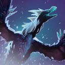
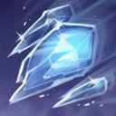
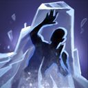
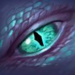
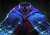
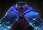

Dota 2 Builds
Winter Wyvern
Как и другим великим поэтам, Аурос постоянно не хватает времени на творчество, ведь жизнь ее полна неожиданностей. Эпос древних драконов знаменит своей долгой и насыщенной историей, но некоторые с опаской полагают, что оставшиеся ученые драконы не настолько плодовиты, как их предки, поскольку с момента процветания в Сказание драконов было добавлено всего лишь несколько строк. Аурос сетует: «Мы стали забывать, что жизнь — это не только победы над врагами и завоевания земель. Каждый должен стремиться к творчеству». Она собралась в исследовательскую экспедицию на поиски новых книг для вдохновения. Но эти исследования жутко утомляют и отвлекают от творческого процесса, на который должно уходить гораздо больше времени. Хоть Аурос и должна скрываться в своем логове, постоянно пополняя сказание, она часто вступает в грандиозные битвы с могучими противниками. Она обыскивает замки и древние библиотеки, а славу, заслуженную в процессе своих поисков, считает побочным эффектом этих исследований. Ее мастерство и отвага на полях сражений стали легендарными, но в муках творчества она не смогла создать того, что заслужило бы признание. Как бы то ни было, она не будет довольствоваться ролью героя сказания. Она хочет быть его автором.
Способности/Abulities
Arctic Burn
 Герой взмывает в небо на арктическом ветре, получая беспрепятственное передвижение и вдыхая жгучий мороз в каждую свою атаку. В полёте можно атаковать дальше и быстрее. Цель морозных атак замедляется и каждую секунду получает урон в размере 6/7/8/9% от текущего запаса здоровья. Также эта способность защищает глаза от ночной прохлады, увеличивая радиус ночного обзора в полёте на 400.

Способность: ненаправленная/переключаемая (с Aghanim's Scepter)
Действует на: себя/врагов
Тип урона: магический
Базовая анимация атаки: 0,1
Бонус к дальности атаки: 350/400/450/500
Бонус к скорости полета снаряда: 500
Доп. радиус обзора ночью: 400
Урон от текущего здоровья в секунду: 6/7/8/9%
Замедление передвижения: 16/24/32/40% (Талант: 28/36/44/52%)
Длительность эффекта: 5 (Талант: 7)
Длительность:7/8/9/10
Из органа, которым драконы извергают пламя, Аурос выдыхает невообразимый холод, который ввергает врагов в жгучую агонию.Splinter Blast
 Запускает во врага ледяной шар, который после удара раскалывается на осколки, летящие в противников в радиусе 500 вокруг цели, не причиняя ей ущерб. Задетые осколками противники будут замедлены на 30%.Способность: направленная на юнита
Действует на: врагов
Тип урона: магический
Дальность применения: 1200
Радиус разлёта осколков:500 (Талант: 900)
Урон: 100/180/260/340 (Талант: 200/280/360/440)
Замедление скорости передвижения: 30%
Длительность замедления: 4
Длительность оглушения: 05
Длительность задержки ауры True Sight: 0 (Талант: 1,5)
Виверна запускает во врагов ледяной шар, медленно собирающийся железами ее холодной глотки.Cold Embrace
 Заковывает союзника в ледяной кокон, замораживая его и ежесекундно восстанавливая определенное число здоровья плюс процент от максимального уровня здоровья. Кокон полностью блокирует весь физический урон.Способность: направленная на юнита
Действует на: союзников
Дальность применения: 850/900/950/1000
Базовая регенерация здоровья: 30/35/40/45 (Талант: 55/60/65/70)
Регенерация от процента максимального здоровья: 1,75/2,5/3,25/4%
Длительность: 4
Сердце зимы заключает раненого в холодные целительные объятья. Лёд замедляет течение крови и упрощает работу лечебной магииWinter's Curse
 Примораживает противника к земле, повергая окружающих его союзников в безумие и заставляя их атаковать цель способности с повышенной скоростью. Противники под этим эффектом получают урон только от своих союзников, владельца способности и его подконтрольных существ.Способность: направленная на юнита
Действует на: врагов
Дальность применения: 700/750/800
Радиус: 525
Уменьшение получаемого урона: 100%
Увеличение скорости атаки: 65
Длительность:4,5/5/5,5 (Талант: 6/6,5/7)
Таймер проверки ближайших союзников: 2,5
Старейшее из заклинаний, почитаемых драконами-писателями, открывает глаза на истину: иногда враг моего врага — мой враг.Сборка/Builds
Начальный закуп:


Основные предметы:

 
